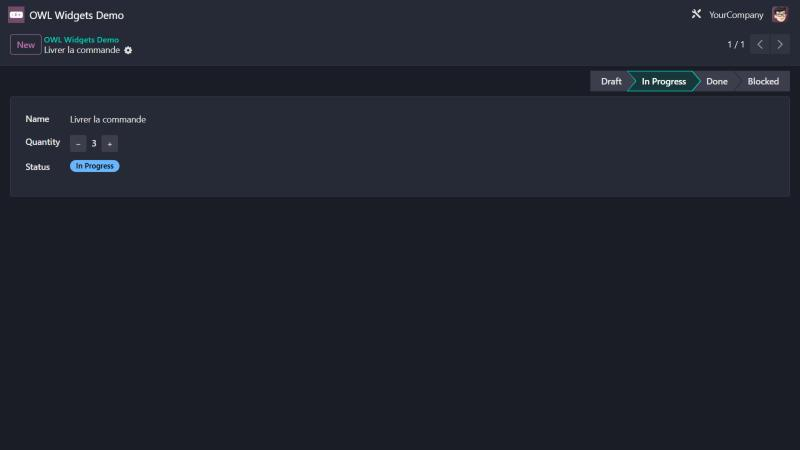

<section class="oe_container">
    <div class="oe_row oe_spaced">
        <h2 class="oe_slogan">OWL Widgets Demo</h2>
        <h3 class="oe_slogan">Deux widgets de champ OWL commentés pour apprendre Odoo 17</h3>
        <p>
            <code>counter</code> affiche un entier avec des boutons − et + et respecte la lecture seule ;
            <code>status_badge</code> affiche un champ selection sous forme de badge coloré.
            Un menu « OWL Widgets Demo » permet de les essayer.
        </p>
        
    </div>
</section>
